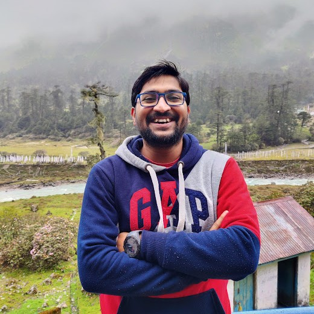

Started remote internship with Chayan Sarkar at TCS Research & Innovation.

Welcome!
(How to pronounce my name)
Hi, I'm Himanshu Goyal. I am an MS CS (Specialisation: Computing Systems) student at the Georgia Institute of Technology. Earlier this year, I graduated as a CS Dual Degree student from the Indian Institute of Technology Bhubaneswar. I am interested in developing large-scale secure systems using ideas from cryptography, system security, and systems. Previously, I focussed on building practical decentralized IoT/WSNs systems that embodies Trust, Security, and Privacy guarantees. I was advised by Dr. Sudipta Saha. I am also closely associated with Decentralized and Smart Systems Research Group (DSSRG) at IIT Bhubaneswar.
Verily, I truly enjoy applied cryptography in particular.
I maintain a list of cryptographic resources under the Crypto Resources tab. It primarily contains reference to the courses taught at universities along with some additional helpful information. If you feel like contributing, I welcome you to contact me for the same. I occasionally blog to distill my understanding from the readings I do. Well, you can find me reading, lurking reddit and twitter in my spare time. Nevertheless, I am an ardent Cricket fan and love talking about it.
Updates
-
May 2020
-
Apr 2020
Summer Internship with ENCRYPTO Group at TU Darmstadt, Germany(Cancelled due to Covid outbreak). -
Mar 2020
Participated at Smart India Hackathon(SIH) 2020.
-
Dec 2019
Secured Bronze medal at 8th Inter-IIT Tech meet in Outreach Exercise for New Technology Ideas in TV Audience Measurement.
-
May 2019
Started Summer Internship at CNERG IIT Kharagpur on Characterization of Workload in multi-tier cloud application under the guidance of Sandeep Chakraborty.
-
Sep 2018
Started Computer Science Coursework
-
May 2018
Transferred from 4-year Metallurgical Programme to 5-year Dual Degree(B.tech+M.tech) in Computer Science Engineering(1 out of entire batch).
-
Jul 2017
Successfully passed both JEE Main and JEE Advance examinations and secured an admission at IIT Bhubaneswar in its 4-year undergraduate programme in Metallurgical and Materials Engineering.
-
May 2016
Got a direct admission offer from BITS-Pilani on the basis of excellent Intermediate academic performance at Birla School Pilani .